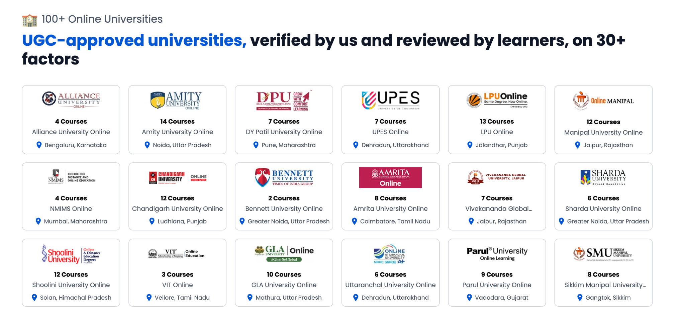
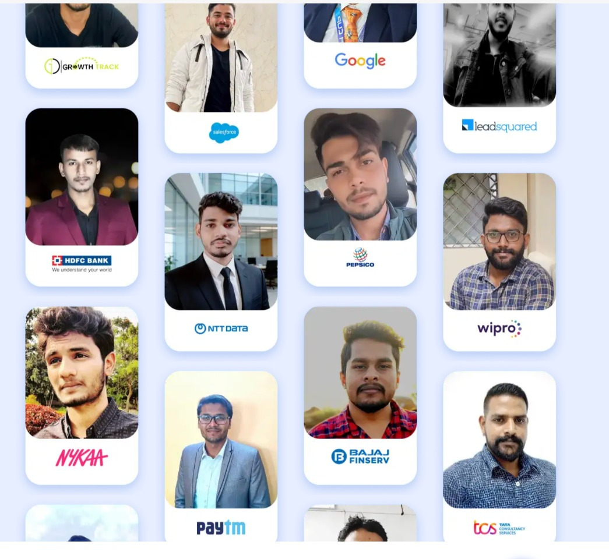

Find the Right Online Degree for Your Career
Degree to Career helps students and working professionals explore recognised online undergraduate and postgraduate programs from leading universities in India.

Explore UGC-recognised online universities and choose a program that fits your goals.
Online UG & PG Programs
Get guidance to compare universities, programs, eligibility, fees and admission processes.
Online MBA
Explore online MBA programs from recognised universities and choose a specialisation aligned with your career goals.
Online BBA
Get guidance on undergraduate business programs suitable for students and working professionals.
Online MCA
Explore technology-focused postgraduate programs and compare available university options.
Other Online UG & PG
Get guidance across other recognised online undergraduate and postgraduate disciplines.
Why Use Degree to Career?
Choosing an online degree can be confusing when there are multiple universities, programs, specialisations and fee structures to compare.
We simplify the process by helping you understand your options and make a more informed decision.
University Comparison
Compare recognised universities, programs, specialisations, fees and other important factors before making a decision.
Personalised Guidance
Get guidance based on your education, experience, career goals and preferred program.
Admission Assistance
Understand eligibility, documentation, application requirements and the admission process.
Support Throughout the Process
Our guidance does not stop at selecting a program. We help you understand the next steps towards admission.
1000s+
Students Have Taken Their Next Step
Thousands of students and working professionals have explored online degree opportunities with guidance from education professionals.

How Degree to Career Helps You
A simple process designed to help you understand your online degree options before you make a decision.
Understand Your Goal
We understand your educational background, experience and career objectives.
Explore Options
We help you explore suitable online UG and PG programs and university options.
Compare Programs
Understand differences in eligibility, fees, duration, specialisations and other factors.
Move Forward
Once you choose an option, we help you understand the next steps in the admission process.
Questions About Online Degrees?
Here are answers to some common questions.
What is Degree to Career?
Degree to Career is an education guidance platform that helps students and working professionals explore online undergraduate and postgraduate degree programs.
Which programs do you provide guidance for?
We provide guidance for online UG and PG degree programs including MBA, BBA, MCA and other undergraduate and postgraduate programs.
Can working professionals pursue an online degree?
Many online degree programs are designed to be accessible to working professionals. Eligibility depends on the specific university and program.
Can you help me compare universities?
Yes. We can help you understand and compare university options, programs, eligibility, specialisations, fees and admission processes.
Is the guidance free?
You can contact our counsellors to understand available program options and receive initial guidance about suitable online degree programs.
Confused About Which Online Degree to Choose?
Speak with our education guidance team and understand the options available for your career goals.
Talk to Our Counsellor